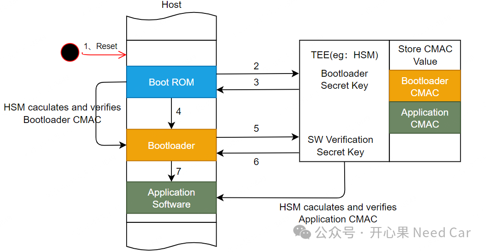
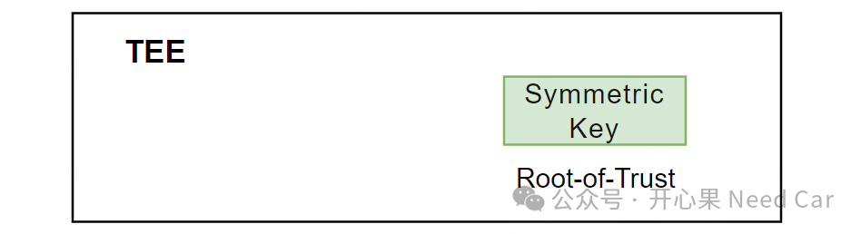
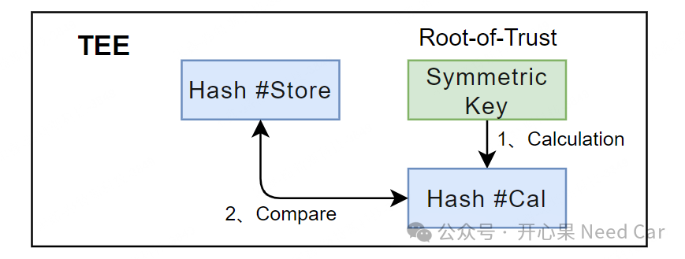
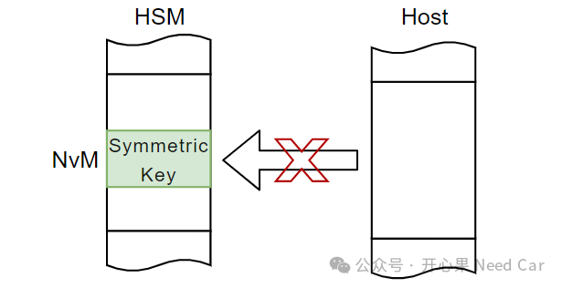

在信息安全的话题里，对称密钥（Symmetric Key），我们并不陌生。但是，对称密钥的使用细节，还有很多值得我们思考，尤其在工程应用中，更是如此。比如，本文要聊的话题：对称密钥，需要一机一密吗？如果需要，又是为什么呢？我们知道，密钥一定是配合算法使用的。对于对称密钥，自然会想到AES（Advanced Encryption Standard）加密算法、CMAC（Cipher-based Message Authentication Code）算法等。对于CMAC，又会想到安全启动（Secure Boot）。如果将对称密钥看作信任根（Root-of-Trust），用于后续的软件认证，那么，首先需要确保此密钥是可信任的。基于对称密钥的安全启动，示意如下：
1、控制器冷启动或者硬复位以后，首先执行Boot ROM;
2、Host通过调用对应API服务，请求HSM算法，计算Bootloader的CMAC，再与HSM中存储的Bootloader CMAC对比；
3、根据比对比的结果，执行对应的制裁（Sanction），eg：Halt，Reset等；
4、Bootloader校验Ok，执行Bootloader程序；5、Bootloader通过API调用HSM算法，计算Application的CMAC，与HSM中存储的Application CMAC对比；6、根据对比的结果，执行对应的制裁（Sanction）；7、Application校验Ok，执行Application程序。首先，该对称密钥的访问（access）需要在TEE（Trused Execution Environment，可信环境）中访问，禁止对称密钥信息出TEE，示意如下：

其次，确保对称密钥的机密性（Confidentiality）和完整性（Integrity）。完整性的确保不难，eg：使用Hash或者CRC均可。机密性如何做呢？可以使用芯片自带的原始密钥进行加密处理。在实际的工程中，一般使用完整性或者机密性一种方式。以完整性为例，每次使用对称密钥之前，先计算一次Hash #Cal，之后与存储的Hash #Store对比，如果一致（Hash #Cal == Hash #Store），则说明该对称密钥可用，示意如下：
再次，对称密钥需要存储到安全区域。为了防止对称密钥被外部非法访问，密钥需要存储到TEE所属的内存区。eg：TC3xx HSM（Hardware Security Module）的NvM（Non-volatile Memory）中，确保对称密钥只能被HSM访问，而不能被Host访问，示意如下：

提示：HSM可以看作TEE。
3、对称密钥需要一机一密吗？
回到本文关注的问题：对称密钥需要一机一密吗？答：需要。为什么需要一机一密呢？答：防止可拓展攻击（Scalable attacks）。可拓展攻击是可以随着攻击规模的扩大而增强攻击效果的一种攻击手段。也就是说，如果所有的控制器使用的对称密钥相同，假设可以攻破一个控制器，也就可以攻破同批次的所有控制器。所以，从信息安全的角度，所有控制器使用相同的对称密钥是不安全的。
要做到一机一密，就需要使用一定的策略，比如UID等。
总结：
本文主要讨论了对称密钥的使用场景，对称密钥的防护以及对称密钥唯一性的原因。
点击下方关注，一起聊聊Autosar/嵌入式，如果需要，联系作者进群，给你更专业的解答